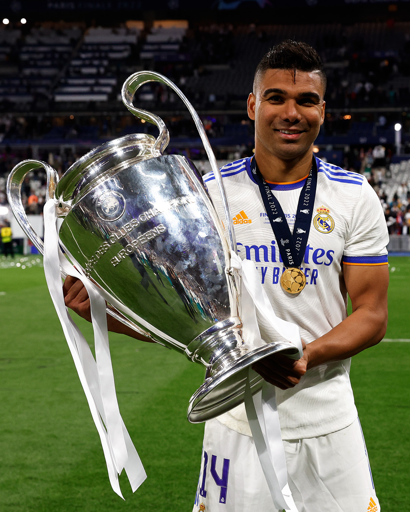
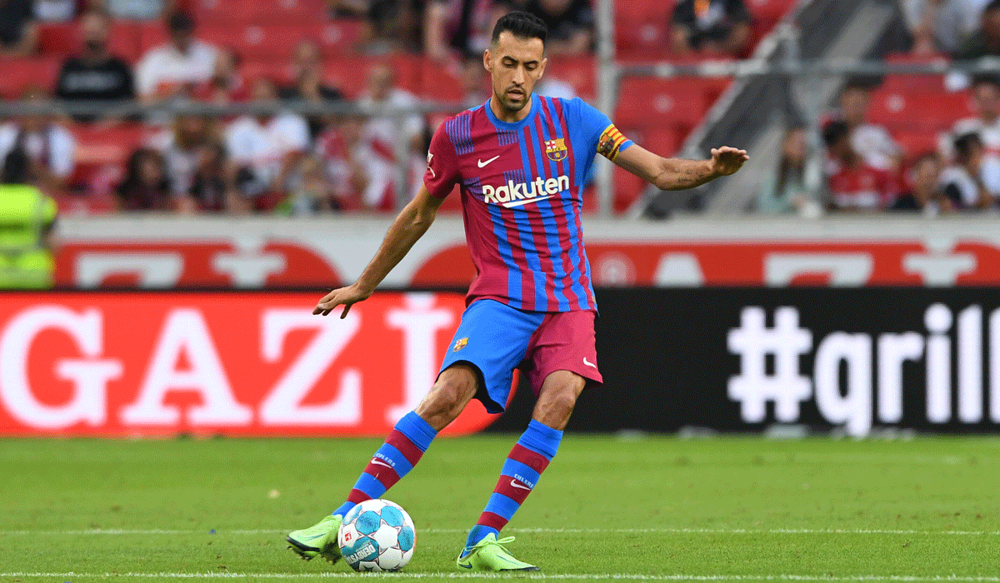

Casemiro
Carlos Henrique Casemiro born 23 February 1992.
Casemiro is a Brazilian professional footballer
is plays as a defensive midfielder for Premier League club Real Madrid Manchester United
Рост 185[1] см
Вес 84[1] кг
Позиция опорный полузащитник
Информация о клубе
Клуб Флаг Англии Манчестер Юнайтед
Номер 18

Busquets
Се́рхио Буске́тс-и-Бу́ргос (кат. Sergio Busquets i Burgos; род. 16 июля 1988, Сабадель, Испания)
— испанский футболист, опорный полузащитник, капитан футбольного клуба «Барселона» и
капитан национальной сборной Испании.
Рост 189[1] см
Вес 76[1] кг
Позиция опорный полузащитник
